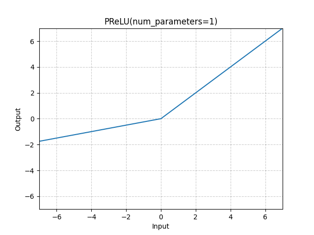

Shift Negative Activation¶
Overview¶
Some activation functions are harder to quantize than others (e.g. the swish, Leaky ReLU, etc.).
The output of these activation layers contain negative values that only use a small part of the dynamic quantization range.
Trouble Situation¶
The quantization accuracy may degrade when your model contains the following layers:
torch.nn.PReLU / torch.nn.functional.prelu
torch.nn.ELU / torch.nn.functional.elu
torch.nn.Hardswish / torch.nn.functional.hardswish
torch.nn.SiLU / torch.nn.functional.silu
torch.nn.GELU / torch.nn.functional.gelu
Example: PReLU [2]
{kind=link}
Solution¶
Shifting negative values to positive values can improve quantization error (saving an extra 1bit).
Set shift_negative_activation_correction to True in the QuantizationConfig in CoreConfig.
core_config = mct.core.CoreConfig(mct.core.QuantizationConfig(shift_negative_activation_correction=True))
quantized_model, _ = mct.ptq.pytorch_post_training_quantization(...,
core_config=core_config)
Note
The default value of shift_negative_activation_correction is True. If you change it to False, this solution may work.
Note
After activating this flag, you have a few more tweaks to its operation that you can control with the shift_negative_ratio, shift_negative_threshold_recalculation & shift_negative_params_search flags.
Read all about them in the quantization configuration class description.